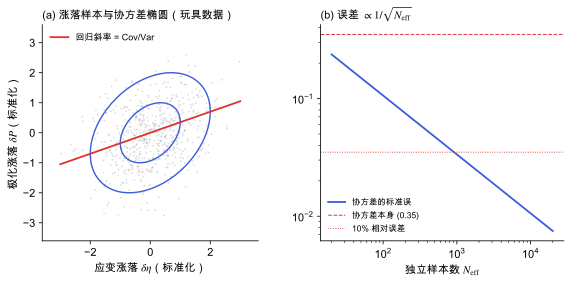

涨落公式：从平衡涨落求响应张量
说明为什么平衡态里应变和极化的涨落协方差就是压电、弹性、介电响应，公式里的体积和单位约定是什么，什么条件下这条路比 0 K 的二阶导数更有用，统计误差怎样估计。
完整推导还需要
只是提示，不需要先读完才能往下看。
直觉直观解释
0 K 的做法是“推一下，看它怎么动”：施加应变或电场，求能量的二阶导数（见 从能量到结构与响应）。有限温度下还有另一条路：什么都不推，让体系在热平衡里自己涨落，然后看两个量一起涨落的程度。
理由是线性响应理论的一个普遍结论：外场与某个量 A 耦合时，另一个量 B 的平均值对外场的响应，等于平衡态下 A 与 B 的协方差除以 k_{\mathrm B}T。这就是涨落—耗散定理 (fluctuation-dissipation theorem) 的静态形式 [Kubo 1966]。弹性对应应变自身的涨落 [Parrinello & Rahman 1982]，介电对应偶极自身的涨落 [Neumann 1983]，压电对应应变与极化的交叉涨落。
这条路的好处是温度、非谐性和构型无序都自动包含在轨迹里。代价是协方差是个统计量，要很长的轨迹才能压住误差，而压电又恰好是一个小的交叉项。

| 符号 | 是什么 | 图里对应 |
|---|---|---|
| \delta\eta | 一帧的应变减去平均应变 | (a) 横轴 |
| \delta P | 一帧的极化减去平均极化 | (a) 纵轴 |
| 协方差椭圆 | (\delta\eta,\delta P) 联合分布的等概率线；倾斜程度反映协方差 | (a) 蓝色椭圆 |
| N_{\mathrm{eff}} | 轨迹里统计上独立的样本数，约为总时长除以两倍自相关时间 | (b) 横轴 |
推导数学与推导
在恒应力、恒温系综里，给哈密顿量加上电场耦合：
其中 \Gamma 是相空间点（原子坐标、动量与晶胞）；V 是模拟盒子（超胞）体积；P_\alpha 是整个模拟盒子的偶极除以 V；\mathcal E_\alpha 是外加电场；重复下标求和。某个量 A 的平均值是 \langle A\rangle = \int A\,e^{-H'/k_{\mathrm B}T}d\Gamma \big/ \int e^{-H'/k_{\mathrm B}T}d\Gamma。对 \mathcal E_\alpha 求导并取 \mathcal E\to 0：
其中 \delta A = A - \langle A\rangle。把 A 换成应变、极化，或把耦合换成应力与应变，得到三个涨落公式：
其中 d_{\alpha j} 是压电应变系数（恒应力），\eta_j 是 Voigt 应变（剪切取工程应变，与 压电张量 相同）；s_{jk} 是柔顺张量（弹性张量 C 的逆）；\chi_{\alpha\beta} 是介电极化率；\epsilon_0 是真空介电常数。\eta 从模拟盒子的晶胞矩阵相对参考晶胞算出。
什么时候值得用对应与边界
- 适用：有低频、强非谐的模式（分子转动、氢键质子的运动、接近相变的软模），0 K 的二阶导数描述不了它们的有限温度行为。已有工作用有效哈密顿量的蒙特卡洛模拟，借涨落研究了钙钛矿铁电体压电响应随温度的变化 [García & Vanderbilt 1998]。
- 不划算：远离相变、近似简谐的刚性晶体。按上面的简谐极限，涨落公式只会以更大的统计误差重现 0 K 的结果。
- 极化从哪里来：MD 每一帧都需要 P。DFT 级 MD 可以每帧算 Berry 相，但代价高；常见做法是训练一个预测偶极或玻恩电荷的模型（见 机器学习势中的长程静电与电场响应）。只用固定的 Z^{*} 乘以位移会漏掉夹持离子项 \bar e 和 Z^{*} 随构型的变化。
在本研究线里的样子对应与边界
- d33_theory 方案：用 MLIP 跑恒压恒温 MD，用偶极模型给每帧的 P，按上面第一式求 d(T)。计算链里 DFPT 得到的 0 K 值可以作为低温端的检查：外推到低温时，两者应当接近（量子核效应除外，见下）。
- 系综：恒压控压器必须给出正确的晶胞涨落。Parrinello–Rahman 一类全柔性晶胞的方法可以 [Parrinello & Rahman 1981]；Berendsen 控压只把压力往目标值拉，不产生正确的恒压系综，晶胞涨落是错的，不能用于涨落公式。
- 统计误差：用分块平均 (block averaging) 估计 N_{\mathrm{eff}}。压电分量往往是小的交叉项，相对误差比弹性分量收敛得慢。
常见坑对应与边界
- 控压器错误：用了 Berendsen 或只允许各向同性变胞的控压器，剪切涨落被抑制，剪切分量（例如 d_{16}）会系统性偏小或为零。
- 参考晶胞：\eta 应当相对于平均晶胞计算；参考晶胞选错只改变 \langle\eta\rangle，不改变涨落，但转换到晶体坐标系时会把分量转错。
- 样本相关：把相邻帧当作独立样本，会严重低估误差。
- 量子核效应：经典 MD 在低温下高估振动幅度。低温端与 DFPT 比较时，要考虑这一点。
检验自己对应与边界
参考资料
论文Kubo 1966
R. Kubo, The fluctuation-dissipation theorem, Rep. Prog. Phys. 29, 255–284 (1966)
尚未实际查阅，目前只是拟查阅书目
论文Parrinello & Rahman 1982
尚未实际查阅，目前只是拟查阅书目
论文Neumann 1983
尚未实际查阅，目前只是拟查阅书目
论文García & Vanderbilt 1998
尚未实际查阅，目前只是拟查阅书目
教材Frenkel & Smit 2002
D. Frenkel, B. Smit, Understanding Molecular Simulation, 2nd ed., Academic Press (2002)
尚未实际查阅，目前只是拟查阅书目
论文Parrinello & Rahman 1981
尚未实际查阅，目前只是拟查阅书目
分类统计力学与采样 · 方法 · 研究线：压电与响应计算、机器学习势 · 状态：草稿